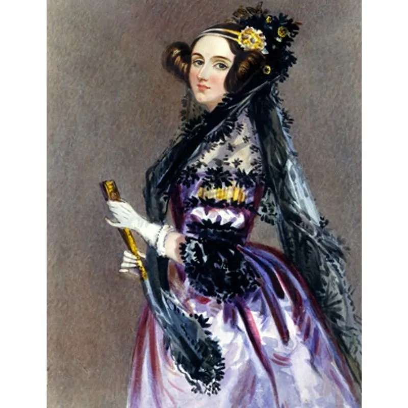

← Back
3 of The Most Important Women in Technology

The ever evolving and broad field of technology has been around ever since humans have. The field has recognized its notable pioneers and inventors, but being a woman in technology means it is harder to be recognized. Ada Lovelace, Hedy Lamarr, and Grace Hopper were all brilliant technological innovators and are responsible for many of the technologies we use everyday.
Ada Lovelace
Augusta Ada Byron, more commonly known as Ada Lovelace was born in 1812 to poet Lord Byron and mathematician Lady Byron in England. At the time, studying mathematics was unusual for a woman, but her mother insisted that her daughter follow her footsteps. In 1833, Lovelace met English polymath Charles Babbage where he demonstrated the prototype for his differential engine, a calculator used to tabulate polynomials, to her.
In 1840, Babbage started giving lectures about his different engines and Lovelace was appointed as transcriptor and translator. She would often add notes to the recordings of Babbage’s seminars which would usually surpass the length of the talk itself. In the transcription of one of Babbage’s lectures on the analytical engine, the first general mechanical computer, Lovelace created an algorithm for the machine to compute the Bernoulli number. While the engine was never completed, leading to the program never to be tested, the algorithm was published in a scientific journal in 1843. Because of her Bernoulli algorithm, Lovelace is considered to be the first computer programmer.
Hedy Lamarr
Rising to fame as a Hollywood actress in the 1930s, Austrian-American Jewish inventor Hedy Lamarr is the mind behind the foundational technology used to create WiFi, GPS, and Bluetooth. When Lamarr was younger, her father would teach her about the inner workings of different machines which inspired her to become an inventor. Lamarr was discovered as an actress when she was 16 and her scientific mind was ignored. In 1933, Lamarr married Austrian munitions dealer Fritz Mandl. During her marriage to Mandl, Lamarr was introduced to many scandalous businessmen and personalities who were associated with the Nazi Party. In 1937, Lamarr fled to London to escape her marriage and ensure her safety with the knowledge of the Axis powers’ munitions. In London, she met an MGM studio executive and scored a ticket to Hollywood.
Arriving in Hollywood, she met Howard Hughes, a pilot and businessman, who showed her his planes and fuelled her passion for invention. Hughes wanted to create faster planes and Lamarr created a new wing design inspired by the fastest fish and birds. With Hughes’s help, Lamarr continued inventing and improving mechanical devices. In 1940, Lamarr met George Antheil and they began talking about the war. With her knowledge of Axis munitions and other weaponry, the pair started to brainstorm ways to combat the enemies. They collaborated on a communication system that was intended to guide torpedoes which used the notion of frequency hopping between radiowaves. Frequency hopping describes switching between different frequencies to avoid signal jamming. While the Navy did not implement the new system, it provides the basis for WiFi, GPS, and Bluetooth technologies.
Grace Hopper
Born in 1906 in New York, Grace Murray Hopper had always had an interest in engineering and would take apart and put back together her household appliances. She earned her bachelor’s degree from Vassar College and her Masters and PhD from Yale University in mathematics. After her education, she took up a teaching position at Vassar College. However, due to World War II, Hopper left her position at Vassar College and joined the Women Accepted for Voluntary Service (WAVES) division in the Navy. In 1944, she was assigned to the Bureau of Ordnance Computation Project and produced the Mark I, a prototype of the electronic computer, with her team. She also authored the Manual of Operations for the Automatic Sequence-Controlled Calculator which described fundamental principles of computers.
At the end of World War II, Hopper joined the Eckert-Mauchly Corporation and worked on UNIVAC, the first electronic digital computer. She invented the first computer compiler and co-authored the programming language COBOL. She regularly lectured on computers and climbed up the Navy ranks. Hopper has received many awards and her work is recognized internationally.
~ Written by Laasya Aki, Edited by Christian Mueth
References:
- https://www.computerhistory.org/babbage/adalovelace/
- https://history-computer.com/ada-lovelace-complete-biography/
- https://www.womenshistory.org/education-resources/biographies/hedy-lamarr
- https://www.womenshistory.org/education-resources/biographies/grace-hopper
- https://news.yale.edu/2017/02/10/grace-murray-hopper-1906-1992-legacy-innovation-and-service
Date: 07/25/2022